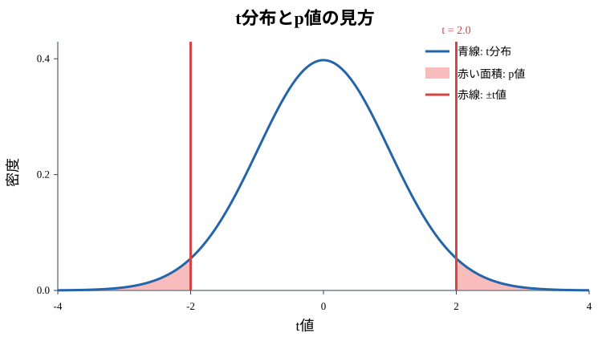
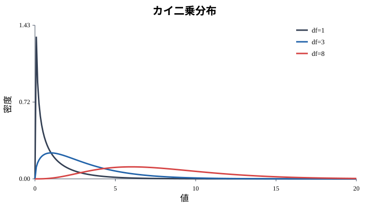
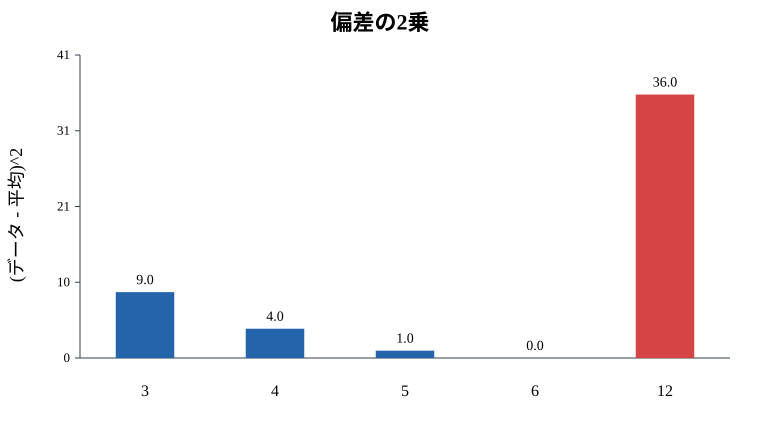

6. p値から分布まで: 検定の考え方を一本の線でつなぐ
この資料で学ぶこと
回帰分析の結果を見ると、p値が出てきます。
しかし、p値だけを暗記すると、途中の考え方が見えなくなりがちです。
この資料では、次の流れを一つにつなげます。
偏差の2乗 → カイ二乗分布 → t分布 → t値 → p値細かい数式を完全に証明することが目的ではありません。
ゴールは、回帰分析のp値が「なんとなく出てきた数字」ではなく、データのばらつきと確率分布から生まれる判断材料だと理解することです。
A. 理論理解と説明
p値とは
p値は、ざっくりいうと、
本当は効果がないと仮定したとき、今回くらい極端な結果が出る確率です。
営業の例で言えば、架電数の回帰係数について、
本当は架電数と契約数に関係がないと仮定します。
そのうえで、今回のデータのように大きな係数が出るのはどれくらい珍しいかを見ます。珍しければ、p値は小さくなります。
t値とは
回帰係数の検定では、よくt値を使います。
t値 = 推定された係数 / 係数の標準誤差標準誤差は、推定された係数のブレやすさです。
つまりt値は、
推定された係数が、標準誤差の何個分だけ0から離れているかを表します。
t値が大きいほど、係数は0から遠いです。だから、「本当に効果がない」という仮定の下では起こりにくい結果だと考えます。
t分布とは
t値を判断するために使う分布がt分布です。
t分布は、正規分布に似た山型の分布ですが、サンプルサイズが小さいときは両端が少し厚くなります。
これは、標準偏差を母集団の本当の値ではなく、サンプルから推定しているためです。データ数が少ないほど、ばらつきの推定も不安定になります。
カイ二乗分布とは
カイ二乗分布は、標準正規分布に従う値を2乗して足したものから生まれる分布です。
たとえば、
Z1, Z2, Z3 が標準正規分布に従うとします。
このとき、
Z1^2 + Z2^2 + Z3^2は自由度3のカイ二乗分布に従います。
ポイントは、偏差を2乗して足すと、ばらつきの大きさを表す量になるということです。
偏差の2乗から検定へ
偏差とは、平均からのズレです。
偏差 = データ - 平均偏差はプラスにもマイナスにもなるので、そのまま足すと打ち消し合います。そこで2乗します。
偏差の2乗 = (データ - 平均)^2回帰分析でも、残差の2乗を足してモデルのズレを測ります。
この「ズレを2乗して足す」という考え方が、分散、カイ二乗分布、t分布、p値へとつながっています。
B. 実践: Rによるモデル構築
営業活動データを使って、回帰係数のt値とp値を見ます。
set.seed(123)
n <- 80
calls <- runif(n, 40, 180)
meetings <- runif(n, 5, 35)
proposals <- runif(n, 1, 18)
contracts <- 0.5 +
0.01 * calls +
0.18 * meetings +
0.45 * proposals +
rnorm(n, 0, 1.5)
sales <- data.frame(contracts, calls, meetings, proposals)
model <- lm(contracts ~ calls + meetings + proposals, data = sales)
summary(model)summary(model) の係数表には、次の列があります。
Estimate: 推定された係数Std. Error: 係数の標準誤差t value: t値Pr(>|t|): p値
自分でt値を計算することもできます。
coef_table <- summary(model)$coefficients
estimate <- coef_table["proposals", "Estimate"]
std_error <- coef_table["proposals", "Std. Error"]
t_value <- estimate / std_error
t_valuep値はt分布を使って計算できます。
df <- df.residual(model)
p_value <- 2 * pt(-abs(t_value), df = df)
p_value2 * がついているのは、プラス方向にもマイナス方向にも極端な結果を考える両側検定だからです。
C. シミュレーションと可視化
t分布とp値を可視化する
# 見方を学ぶため、ここでは説明用に t = 2 の例を描く
t_example <- 2
x <- seq(-4, 4, length.out = 400)
y <- dt(x, df = df)
plot(x, y, type = "l",
main = "t分布とp値の見方",
xlab = "t値",
ylab = "密度",
lwd = 2,
col = "steelblue")
right <- x[x >= t_example]
left <- x[x <= -t_example]
polygon(c(right, rev(right)),
c(dt(right, df = df), rep(0, length(right))),
col = rgb(1, 0, 0, 0.35),
border = NA)
polygon(c(left, rev(left)),
c(dt(left, df = df), rep(0, length(left))),
col = rgb(1, 0, 0, 0.35),
border = NA)
lines(x, y, col = "steelblue", lwd = 2)
abline(v = c(-t_example, t_example), col = "red", lwd = 2)
legend("topright",
legend = c("t分布", "p値の面積", "±t値"),
col = c("steelblue", rgb(1, 0, 0, 0.35), "red"),
lwd = c(2, 8, 2),
bty = "n")
図1: t分布とp値の見方。青い線がt分布、赤い縦線が ±t、赤く塗った両端の面積がp値です。
赤く塗った両端の面積がp値です。p値が小さいということは、「効果がない」と仮定したときに、今回ほど極端なt値が出にくいという意味です。
ここでは見方をわかりやすくするために t = 2 の例を描いています。実際の回帰結果のt値は、summary(model) の t value で確認します。
カイ二乗分布を可視化する
x <- seq(0, 20, length.out = 200)
plot(x, dchisq(x, df = 1), type = "l",
main = "カイ二乗分布",
xlab = "値",
ylab = "密度")
lines(x, dchisq(x, df = 3), col = "blue")
lines(x, dchisq(x, df = 8), col = "red")
legend("topright",
legend = c("df=1", "df=3", "df=8"),
col = c("black", "blue", "red"),
lty = 1,
bty = "n")
図2: 自由度ごとのカイ二乗分布。横軸は値、縦軸は密度です。
カイ二乗分布は、2乗したズレを足し合わせた量と関係します。自由度が大きくなるほど、分布の山は右に移動します。
偏差の2乗を可視化する
x <- c(3, 4, 5, 6, 12)
m <- mean(x)
deviation2 <- (x - m)^2
barplot(deviation2,
names.arg = x,
main = "偏差の2乗",
xlab = "データ",
ylab = "(データ - 平均)^2",
col = "steelblue")
図3: 偏差の2乗。平均から遠いデータほど値が大きくなります。
平均から遠い値ほど、偏差の2乗は大きくなります。2乗することで、大きなズレが強く効くようになります。
まとめ: この資料のオチ
p値は、単独で突然出てくる数字ではありません。
流れは次のようにつながっています。
データのズレを見る
→ ズレを2乗してばらつきの大きさを測る
→ ばらつきの推定にはカイ二乗分布が関係する
→ 係数を標準誤差で割るとt値になる
→ t分布で珍しさを測る
→ その珍しさがp値になる結論として、p値は「正しい・間違い」を決める魔法の数字ではありません。仮定の下で、今回の結果がどれくらい珍しいかを表す数字です。
この資料のゴールは、p値を暗記で読むのではなく、データのズレ、ばらつき、分布、検定が一本の線でつながっていると理解することです。